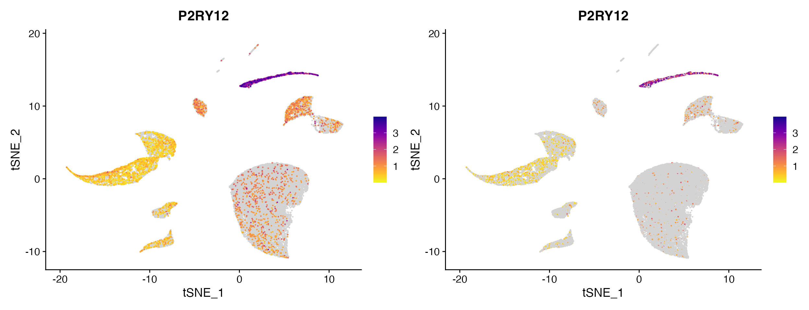
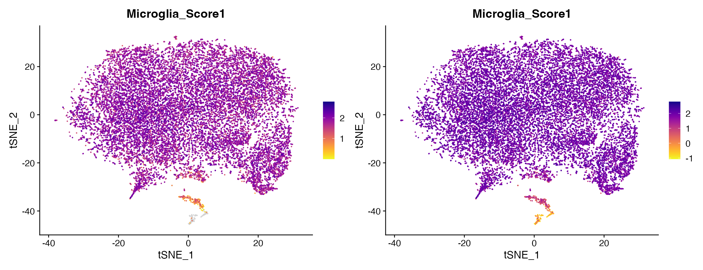
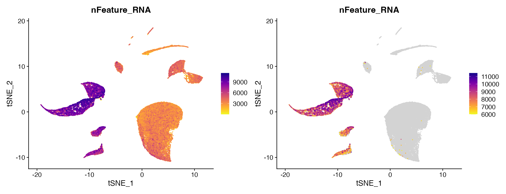
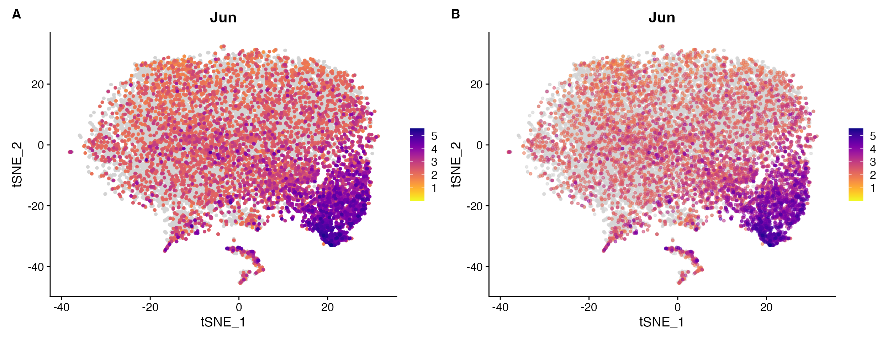
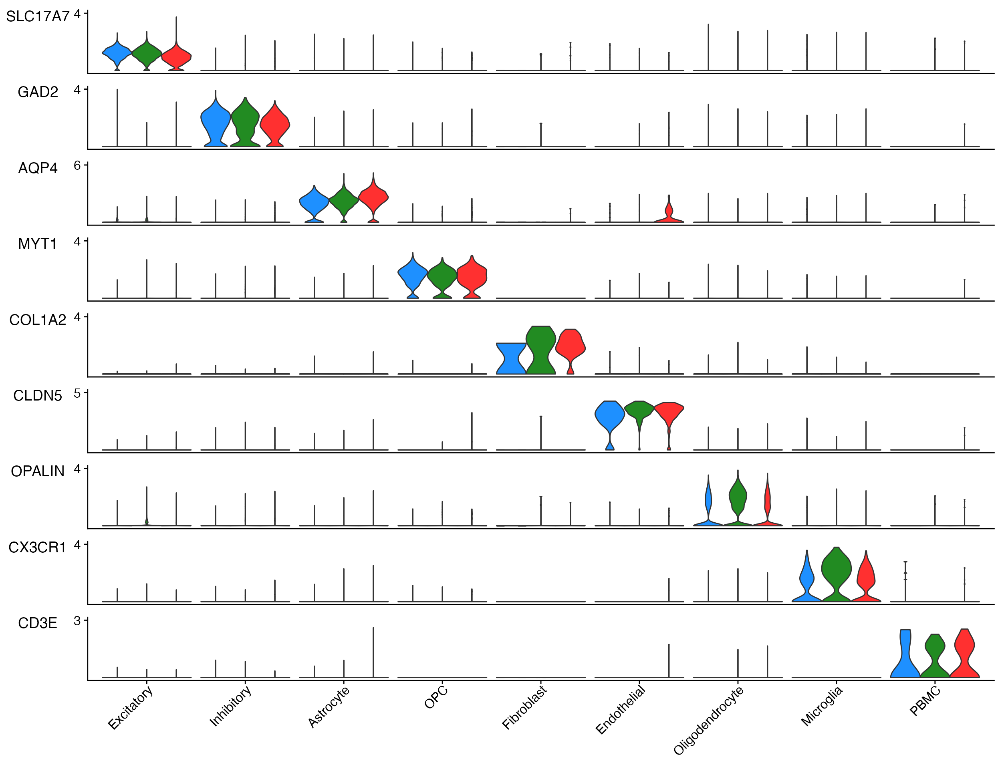
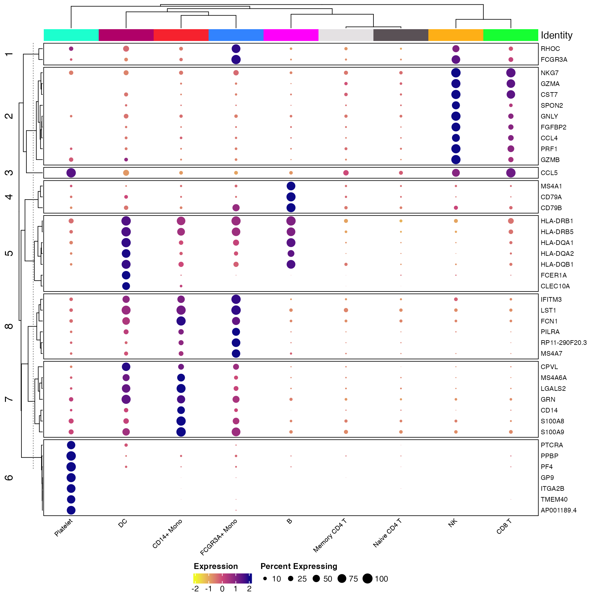

Plotting #1: Analysis Plots
Compiled: December 16, 2021
Source:vignettes/Gene_Expression_Plotting.Rmd
Gene_Expression_Plotting.RmdCustomizing Plots for Enhanced/Simplified Visualization
While the default plots from Seurat and other packages are often very good they are often modified from their original outputs after plotting. scCustomize seeks to simplify this process and enhance some of the default visualizations.
Even simple things like adding the same two ggplot2 themeing options to every plot can be simplified for end user (and enhance reproducibility and code errors) by wrapping them inside a new function.
For this tutorial, I will be utilizing microglia data from Marsh et al., 2020 (bioRxiv) the mouse microglia (Figure 1) referred to as marsh_mouse_micro and the human post-mortem snRNA-seq (Figure 3) referred to as marsh_human_pm in addition to the pbmc3k dataset from SeuratData package.
library(tidyverse)
library(patchwork)
library(viridis)
library(Seurat)
library(scCustomize)
library(qs)
# Load bioRxiv datasets
marsh_mouse_micro <- qread(file = "assets/marsh_2020_micro.qs")
marsh_human_pm <- qread(file = "assets/marsh_human_pm.qs")
# Load pbmc dataset
pbmc <- pbmc3k.SeuratData::pbmc3k.finalWe’ll add some random meta data variables to pbmc data form use in this vignette
pbmc$sample_id <- sample(c("sample1", "sample2", "sample3", "sample4", "sample5", "sample6"), size = ncol(pbmc),
replace = TRUE)
pbmc$treatment <- sample(c("Treatment1", "Treatment", "Treatment3", "Treatment4"), size = ncol(pbmc),
replace = TRUE)General Notes
- Parameter names
- Customized plots that take their origin from Seurat share many direct parameter names from their Seurat equivalents (i.e.,
split.by) but some others use the scCustomize convention so as to be universal throughout the package (i.e., Seurat=cols:scCustomize=colors_use). - Many of the most used parameters for Seurat-based functions have implemented as direct parameter in scCustomize versions allowing for easy tab-completion when calling functions.
- However, for simplicity of function calls this is not comprehensive. However, most scCustomize plotting functions contain
...parameter to allow user to supply any of the parameters for the original Seurat (or other package) function that is being used under the hood.
- Customized plots that take their origin from Seurat share many direct parameter names from their Seurat equivalents (i.e.,
- ggplot2/patchwork Modifications
- All scCustomize plotting functions return either ggplot2 or patchwork objects allowing for easy additional plot/theme modifications using ggplot2/patchwork grammar.
- All scCustomize plotting functions return either ggplot2 or patchwork objects allowing for easy additional plot/theme modifications using ggplot2/patchwork grammar.
- Seurat Function Parameters
- Most scCustomize plotting functions contain
...parameter to allow user to supply any of the parameters for the original Seurat function that is being used under the hood.
- Most scCustomize plotting functions contain
Plotting Highly Variable Genes & PC Loadings
Plotting highly variable genes
scCustomize allows for plotting of highly variable genes with desired number of points labeled in single function. VariableFeaturePlot_scCustom() also contains several additional parameters for customizing visualization.
# Default scCustomize plot
VariableFeaturePlot_scCustom(seurat_object = marsh_mouse_micro, num_features = 20)
# Can remove labels if not desired
VariableFeaturePlot_scCustom(seurat_object = marsh_mouse_micro, num_features = 20, label = FALSE)
# Repel labels
VariableFeaturePlot_scCustom(seurat_object = marsh_mouse_micro, num_features = 20, repel = TRUE)
# Change the scale of y-axis from linear to log10
VariableFeaturePlot_scCustom(seurat_object = marsh_mouse_micro, num_features = 20, repel = TRUE,
y_axis_log = TRUE)
A. Default for VariableFeaturePlot_scCustom labels features by default. Plot can be modified by changing function parameters: B. Setting label = FALSE, C. Setting repel=TRUE for feature names, D. Setting y_axis_log=TRUE to plot y-axis in log scale.
Plotting PC heatmaps and loadings.
For ease in evaluating PCA results scCustomize provides function PC_Plotting() which returns both PC heatmap and Feature Loading plot in single patchwork layout.
PC_Plotting(seurat_object = marsh_mouse_micro, dim_number = 2)
Iterate PC Plotting
This function can be easily enhanced using iterative version Iterate_PC_Loading_Plots() to return a PDF document that contains plots for all desired PCs within object. See function manual and Iterative Plotting Vignette for more info.
Plot Gene Expression in 2D Space (PCA/tSNE/UMAP)
scCustomize has few functions that improve on the default plotting options/parameters from Seurat and other packages.
FeaturePlots
The default plots fromSeurat::FeaturePlot() are very good but I find can be enhanced in few ways that scCustomize sets by default.
Issues with default Seurat settings:
- Parameter
order = FALSEis the default, resulting in potential for non-expressing cells to be plotted on top of expressing cells. - Using custom color palette with greater than 2 colors bins the expression by the total number of colors.
- Non-expressing cells are part of same color scale which can make it difficult to distinguish low expressing cells from non-expressing cells.
# Set color palette
pal <- viridis(n = 10, option = "C", direction = -1)
# Create Plots
FeaturePlot(object = marsh_mouse_micro, features = "Jun")
FeaturePlot(object = marsh_mouse_micro, features = "Jun", order = T)
FeaturePlot(object = marsh_mouse_micro, features = "Jun", cols = pal, order = T)
FeaturePlot() non-ideal results: A. default order = FALSE compared to B. order = TRUE, C. expression binning when attempting to set custom gradient using cols parameter.
FeaturePlot_scCustom solves these issues
# Set color palette
pal <- viridis(n = 10, option = "D")
# Create Plots
FeaturePlot_scCustom(seurat_object = marsh_mouse_micro, features = "Jun", order = F)
FeaturePlot_scCustom(seurat_object = marsh_mouse_micro, features = "Jun")
FeaturePlot_scCustom(seurat_object = marsh_mouse_micro, features = "Jun", colors_use = pal)
FeaturePlot_scCustom() solves issues: A. Order can be set to FALSE with optional parameter when desired. B. However by default is set to TRUE so additional parameter call not required, C. FeaturePlot_scCustom() prevents expression binning when supplying custom color palette.
Sometimes order=TRUE can be distracting though and so can always set it to FALSE In some cases (especially likely in snRNA-seq), some of the low expression may simply represent ambient RNA and therefore plotting with order=FALSE may be advantageous for visualization (or using different plotting method).
FeaturePlot_scCustom(seurat_object = marsh_human_pm, features = "P2RY12")
FeaturePlot_scCustom(seurat_object = marsh_human_pm, features = "P2RY12", order = F)
Plotting non-expressing cells as background.
As you can see above FeaturePlot_scCustom() has the ability to plot non-expressing cells in outside of color scale used for expressing cells. However it is critical that users pay attention to the correctly setting the na_cutoff parameter in FeaturePlot_scCustom.
scCustomize contains a parameter called na_cutoff which tells the function which values to plot as background. By default this is set to value that means background is treated as 0 or below. Depending on what feature, assay, or value you are interested in this parameter should be modified appropriately.
For instance if plotting module score which contains negative values you will probably want to remove the cutoff value entirely to avoid misconstruing results.
FeaturePlot_scCustom(seurat_object = marsh_mouse_micro, features = "Microglia_Score1")
FeaturePlot_scCustom(seurat_object = marsh_mouse_micro, features = "Microglia_Score1", na_cutoff = NA)
Other times you may actually want to set high na_cutoff value to enable better interpretation of the range of values in particular clusters of interest.
FeaturePlot_scCustom(seurat_object = marsh_human_pm, features = "nFeature_RNA")
FeaturePlot_scCustom(seurat_object = marsh_human_pm, features = "nFeature_RNA", na_cutoff = 6000)
Split Feature Plots
Seurat::FeaturePlot() has additional issues when splitting by object@meta.data variable.
- Specifying the number of columns in output is no longer possible which makes viewing plots from objects with large numbers of variables difficult.
FeaturePlot(object = marsh_mouse_micro, features = "P2ry12", split.by = "orig.ident")
FeaturePlot() when using split.by outputs with the number of columns equal to the number of levels in meta.data column.
FeaturePlot_scCustom solves this issue and allows for setting the number of columns in FeaturePlots
FeaturePlot_scCustom(seurat_object = marsh_mouse_micro, features = "P2ry12", split.by = "sample_id",
num_columns = 4)
Split_FeaturePlot() solves this issue and restores ability to set column number using ncolumns parameter.
Density Plots
The Nebulosa package provides really great functions for plotting gene expression via density plots.
scCustomize provides two functions to extend functionality of these plots and for ease of plotting “joint” density plots.
Custom color palettes
Currently Nebulosa only supports plotting using 1 of 5 viridis color palettes: “viridis”, “magma”, “cividis”, “inferno”, and “plasma”). Plot_Density_Custom() changes the default palette to “magma” and also allows for use of any custom gradient.
Plot_Density_Custom(seurat_object = marsh_mouse_micro, features = "Fos")
Plot_Density_Custom(seurat_object = marsh_mouse_micro, features = "Fos", custom_palette = PurpleAndYellow())
Joint Plots
Often user may only want to return the “Joint” density plot when providing multiple features. Plot_Density_Joint_Only() simplifies this requiring only single function and only returns the joint plot for the features provided.
Plot_Density_Joint_Only(seurat_object = marsh_mouse_micro, features = c("Fos", "Jun"))Dual Assay Plotting
In certain situations returning a plot from two different assays within the same object may be advantageous. For instance when object contains but raw and Cell Bender corrected counts you may want to plot the same gene from both assays to view the difference. See Cell Bender Functionality vignette for more info.
cell_bender_example <- qread("assets/astro_nuc_seq.qs")
FeaturePlot_DualAssay(seurat_object = cell_bender_example, features = "Syt1", assay1 = "RAW", assay2 = "RNA")
Non-2D Gene Expression Plots (Violin, Dot, etc)
Stacked Violin Plots
Often plotting many genes simultaneously using Violin plots is desired. scCustomize provides Stacked_VlnPlot() for a more aesthetic stacked violin plot compared to stacked plots that can be made using default Seurat::VlnPlot().
The original version of this function was written by Ming Tang and posted on his blog. Function is included with permission and authorship.
gene_list_plot <- c("SLC17A7", "GAD2", "AQP4", "MYT1", "COL1A2", "CLDN5", "OPALIN", "CX3CR1", "CD3E")
human_colors_list <- c("dodgerblue", "navy", "forestgreen", "darkorange2", "darkorchid3", "orchid",
"orange", "gold", "gray")
# Create Plots
Stacked_VlnPlot(seurat_object = marsh_human_pm, features = gene_list_plot, x_lab_rotate = TRUE,
colors_use = human_colors_list)
Stacked_VlnPlot also supports any additional parameters that are part of Seurat::VlnPlot()
For instance splitting plot by meta data feature.
sample_colors <- c("dodgerblue", "forestgreen", "firebrick1")
# Create Plots
Stacked_VlnPlot(seurat_object = marsh_human_pm, features = gene_list_plot, x_lab_rotate = TRUE,
colors_use = sample_colors, split.by = "orig.ident")
Example plot adding the split.by parameter toview expression by sample and cell type.
Adjust Vertical Plot Spacing
Depending on number of genes plotted and user preferences it may be helpful to change the vertical spacing between plots. This can be done using the plot_spacing and spacing_unit parameters.
# Default plot spacing (plot_spacing = 0.15 and spacing_unit = 'cm')
Stacked_VlnPlot(seurat_object = pbmc, features = c("CD3E", "CD14", "MS4A1", "FCER1A", "PPBP"), x_lab_rotate = TRUE)
# Double the space between plots
Stacked_VlnPlot(seurat_object = pbmc, features = c("CD3E", "CD14", "MS4A1", "FCER1A", "PPBP"), x_lab_rotate = TRUE,
plot_spacing = 0.3)
Adjusting Plot Size
Please note that even more so than many other plots you will need to adjust the height and width of these plots significantly depending on the number of features and number of identities being plotted.
Stacked_VlnPlot also supports plotting of object@meta.data variables (i.e. mito% or module scores).
Stacked_VlnPlot(seurat_object = marsh_human_pm, features = c("percent_mito", "percent_ribo"), x_lab_rotate = TRUE,
colors_use = human_colors_list)
Custom DotPlots.
Seurat’s DotPlot() function is really good but lacks the ability to provide custom color gradient of more than 2 colors.
DotPlot_scCustom() allows for plotting with custom gradients.
micro_genes <- c("P2ry12", "Fcrls", "Trem2", "Tmem119", "Cx3cr1", "Hexb", "Tgfbr1", "Sparc", "P2ry13",
"Olfml3", "Adgrg1", "C1qa", "C1qb", "C1qc", "Csf1r", "Fcgr3", "Ly86", "Laptm5")
DotPlot(object = marsh_mouse_micro, features = micro_genes[1:6], cols = viridis_plasma_dark_high)
DotPlot_scCustom(seurat_object = marsh_mouse_micro, features = micro_genes[1:6], colors_use = viridis_plasma_dark_high)
A. Default DotPlot only takes the first few colors when a gradient is provided. B. DotPlot_scCustom allows for use of gradients in full while maintaining visualization.
DotPlot_scCustom() also contains additional parameters for easy manipulations of axes for better plotting.
These allow for:
-
x_lab_rotaterotating x-axis text Default is FALSE. -
y_lab_rotaterotating y-axis text Default is FALSE. -
flip_axesflip the axes. Default is FALSE. -
remove_axis_titlesremove the x- and y-axis labels. Default is TRUE
DotPlot_scCustom(seurat_object = marsh_mouse_micro, features = micro_genes[1:6], x_lab_rotate = TRUE)
DotPlot_scCustom(seurat_object = marsh_mouse_micro, features = micro_genes[1:6], y_lab_rotate = TRUE)
DotPlot_scCustom(seurat_object = marsh_mouse_micro, features = micro_genes[1:6], flip_axes = T,
x_lab_rotate = TRUE)
DotPlot_scCustom(seurat_object = marsh_mouse_micro, features = micro_genes[1:6], flip_axes = T,
remove_axis_titles = FALSE)
A. Rotate x-axis text, B. Rotate y-axis text, C. flip axes and rotate x-axis text, and D. Add axis labels (removed by default).
Split_FeatureScatter()
This is simple function to add functionality that Seurat::FeatureScatter() lacks.
FeatureScatter() plots can be very useful when comparing between two genes/features or comparing module scores. However, Seurat’s implementation lacks the ability to split the plot by a meta data variable.
# Create Plots
Split_FeatureScatter(seurat_object = marsh_mouse_micro, feature1 = "exAM_Score1", feature2 = "Microglia_Score1",
colors_use = mouse_colors, split.by = "Transcription_Method", group.by = "ident", num_columns = 2,
pt.size = 1)
Split_FeatureScatter() solves this issue and allows for splitting of FeatureScatter plots by meta variable.
Plot Meta Data in 2D Space (PCA/tSNE/UMAP)
scCustomize has a few functions that improve on the default plotting options available in Seurat
DimPlots
The scCustomize function DimPlot_scCustom() is a slightly modified version of Seurat::DimPlot() with some different default settings and parameter options.
New default color palettes
The default ggplot2 hue palette becomes very hard to distinguish between at even a moderate number of clusters for a scRNA-seq experiment. scCustomize’s function DimPlot_scCustom sets new default color palettes:
- If less than or equal to 36 groups plotted then the “polychrome” palette will be used.
- If more than 36 groups the “varibow” palette will be used with
shuffle_pal = TRUE. - If user wants to use ggplot2 hue palette then set parameter
ggplot_default_colors = TRUE.
To best demonstrate rationale for this I’m going to use over-clustered version of the marsh_mouse_micro object.
DimPlot(object = marsh_mouse_over)
DimPlot_scCustom(seurat_object = marsh_mouse_over)
DimPlot_scCustom also sets label = TRUE if group.by = NULL by default.
Shuffle Points
By default Seurat’s DimPlot() plots each group on top of the next which can make plots harder to interpret. DimPlot_scCustom sets shuffle = TRUE by default as I believe this setting is more often the visualization that provides the most clarity.
Here is example when plotting by donor in the human dataset to determine how well the dataset integration worked.
DimPlot(object = marsh_human_pm, group.by = "sample_id")
DimPlot_scCustom(seurat_object = marsh_human_pm, group.by = "sample_id")
A. Cannot tell how well integrated the samples are due to plotting one on top of the other. B. Default plot using scCustomize DimPlot_scCustom.
Split DimPlots
When plotting a split plot Seurat::DimPlot() simplifies the axes by implementing shared axes depending on the number of columns specified.
DimPlot(object = pbmc, split.by = "treatment")
DimPlot(object = pbmc, split.by = "sample_id", ncol = 4)
A. The default Seurat split.by looks ok when plots are all present on single row. B. However, the visualization isn’t so good when you starting wrapping plots into multiple rows.
By default when using split.by with DimPlot_scCustom the layout is returned with an axes for each plot to make visualization of large numbers of splits easier.
DimPlot_scCustom(seurat_object = pbmc, split.by = "treatment", num_columns = 4, repel = TRUE)Simplified visualization without having to think about the number of variables that are being plotted.
Can also return to the default Seurat method of splitting plots while maintaining all of the other modifications in DimPlot_scCustom by supplying split_seurat = TRUE
DimPlot_scCustom(seurat_object = pbmc, split.by = "treatment", num_columns = 4, repel = TRUE, split_seurat = TRUE)
Highlight Cluster(s)
Even with optimized color palette it can still be difficult to determine the boundaries of clusters when plotting all clusters at once.
scCustomize provides easy of use function Cluster_Highlight_Plot() to highlight a select cluster or clusters vs. the remainder of cells to determine where they lie on the plot.
NOTE: While named Cluster_Highlight_Plot this function will simply pull from seurat_object@active.ident slot which may or may not be cluster results depending on user settings. For creating highlight plots of meta data variables see next section on Meta_Highlight_Plot.
Cluster_Highlight_Plot(seurat_object = marsh_mouse_over, cluster_name = "7", highlight_color = "navy",
background_color = "lightgray")
Cluster_Highlight_Plot(seurat_object = marsh_mouse_over, cluster_name = "8", highlight_color = "forestgreen",
background_color = "lightgray")
Cluster_Highlight_Plot takes identity or vector of identities and plots them in front of remaining unselected cells.
Highlight Meta Data
scCustomize also contains an analogous function Meta_Highlight_Plot() that allows for quick highlight plots of any valid @meta.data variable. Meta data variables must be one of class(): “factor”, “character”, or “logical” to be highlighted.
Numeric variables representing things like “batch” can be converted using as.character or as.factor first to allow for plotting.
Meta_Highlight_Plot(seurat_object = marsh_mouse_micro, meta_data_column = "Transcription_Method",
meta_data_highlight = "ENZYMATIC_NONE", highlight_color = "firebrick", background_color = "lightgray")
DimPlot Layout Plots
Sometimes can be beneficial to create layouts where there is no grouping variable and plots are simply colored by the split variable.
DimPlot_All_Samples(seurat_object = pbmc, meta_data_column = "sample_id", num_col = 3, pt.size = 0.5)
Visualize all samples in simple plot layout.
Can unique color each plot by providing a vector of colors instead of single value
DimPlot_All_Samples(seurat_object = marsh_mouse_micro, meta_data_column = "Transcription", num_col = 2,
pt.size = 0.5, color = c("firebrick3", "dodgerblue3"))